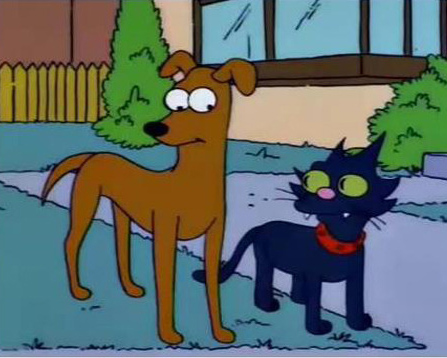

Homero Jay Simpson
Edad: entre los 34 y 40 años
Apariencia: Cabello azul oscuro, prominente barriga, apariencia descuidada
Trabajo: Inspector de seguridad en la planta nuclear de Springfield
Frase icónica: "D'oh!"
|
|
Homero Jay SimpsonEdad: entre los 34 y 40 años Apariencia: Cabello azul oscuro, prominente barriga, apariencia descuidada Trabajo: Inspector de seguridad en la planta nuclear de Springfield Frase icónica: "D'oh!" |
Marjorie "Marge" Bouvier SimpsonEdad: 36 años Apariencia: Cabello azul alto en forma de torre, ojos grandes, piel amarilla Trabajo: Ama de casa Intereses: Pintura y apasionada de la jardinería |
Bartholomew "Bart" SimpsonEdad: 10 años Apariencia: Pelo rubio puntiagudo, ojos grandes, piel amarilla Estudiante de 4º grado de la Escuela Primaria de Springfield Frase icónica: "¡Ay, caramba!" |
Lisa Marie SimpsonEdad: 8 años Apariencia: Pelo rubio largo y puntiagudo, ojos grandes, piel amarilla Estudiante de 2º grado de la Escuela Primaria de Springfield Intereses y habilidades: Toca el saxofón, ama la música clásica y el jazz |
Margaret "Maggie" SimpsonEdad: 1 a 2 años Apariencia: Pelo rubio puntiagudo, ojos grandes, piel amarilla Su chupete rojo es un símbolo distintivo de su identidad |
|  |
Ayudante de Santa (Santa's Little Helper)
Bola de Nieve (Snowball)
|